Приобретение практических навыков по настройке удалённого доступа к
серверу с помощью SSH.
Задание
Настройте запрет удалённого доступа на сервер по SSH для
пользователя root.
Настройте разрешение удалённого доступа к серверу по SSH только для
пользователей группы vagrant и вашего пользователя.
Настройте удалённый доступ к серверу по SSH через порт 2022.
Настройте удалённый доступ к серверу по SSH по ключу.
Организуйте SSH-туннель с клиента на сервер, перенаправив локальное
соединение с TCP-порта 80 на порт 8080.
Используя удалённое SSH-соединение, выполните с клиента несколько
команд на сервере.
Используя удалённое SSH-соединение, запустите с клиента графическое
приложение на сервере.
Напишите скрипт для Vagrant, фиксирующий действия по настройке
SSH-сервера во внутреннем окружении виртуальной машины server.
Соответствующим образом внесите изменения в Vagrantfile.
Выполнение лабораторной работы
Запрет удалённого доступа по SSH для пользователя root
Запрет
удалённого доступа по SSH для пользователя root
На server задаем пароль для root.
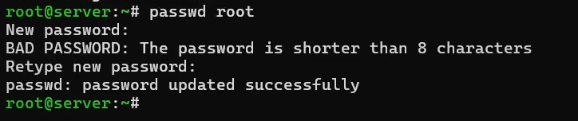
Figure 1: Установка пароля для
пользователя root
Запрет
удалённого доступа по SSH для пользователя root
На server в дополнительном терминале запускаем мониторинг системных
событий.
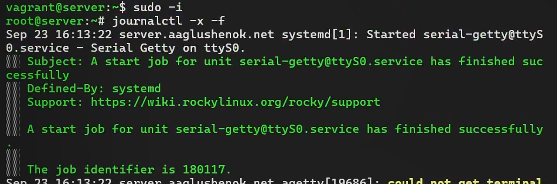
Figure 2: Запуск мониторинга системных
событий
Запрет
удалённого доступа по SSH для пользователя root
С client пытаемся получить доступ к серверу посредством
SSH-соединения через root.
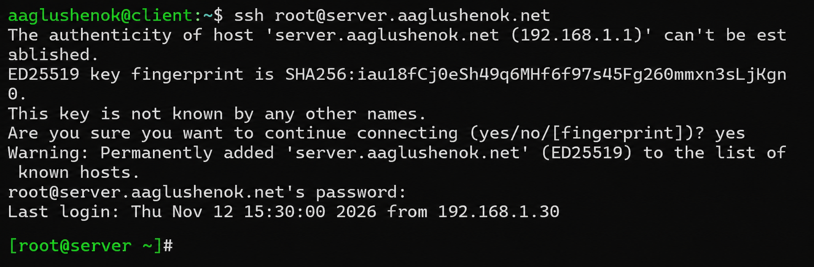
Figure 3: Первая успешная попытка входа
под root
Cистема выдала предупреждение об отсутствии ключа и запросила
подтверждение отпечатка. После подтверждения сервер запросил пароль, и
соединение было успешно установлено. Прямой удалённый
доступ по SSH для пользователя root разрешён, что демонстрирует
уязвимость стандартных настроек.
Запрет
удалённого доступа по SSH для пользователя root
На server открываем файл /etc/ssh/sshd_config и запрещаем вход на
сервер пользователю root.
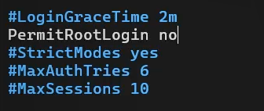
Figure 4: Запрет входа для root в
конфигурации
Запрет
удалённого доступа по SSH для пользователя root
Сохраняем изменения в файле конфигурации, перезапускаем sshd.
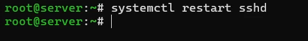
Figure 5: Перезапуск службы
sshd
Запрет
удалённого доступа по SSH для пользователя root
Повторяем попытку получения доступа с client к серверу посредством
SSH-соединения через пользователя root.
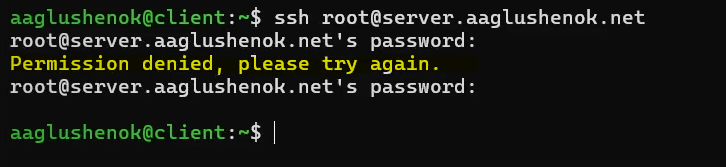
Figure 6: Отказ в доступе для
пользователя root
Попытка подключения с client завершилась отказом.
Сервер запросил пароль, однако после его ввода выдал сообщение
Permission denied, please try again. и разорвал соединение. Прямой
удалённый доступ по SSH для пользователя root заблокирован.
Ограничение списка пользователей для удалённого доступа по SSH
Ограничение
списка пользователей для удалённого доступа по SSH
С client пытаемся получить доступ к серверу посредством
SSH-соединения через пользователя.
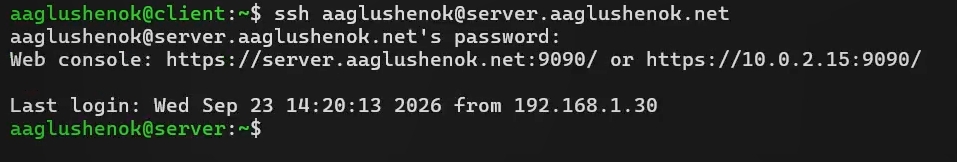
Figure 7: Успешный вход под пользователем
aaglushenok
После ввода пароля соединение было установлено, и предоставлен доступ
к командной оболочке сервера. Вход выполнен успешно,
так как на данном этапе список разрешенных пользователей (AllowUsers)
ещё НЕ настроен.
Ограничение
списка пользователей для удалённого доступа по SSH
На server открываем файл /etc/ssh/sshd_config и обновляем список
разрешенных пользователей.
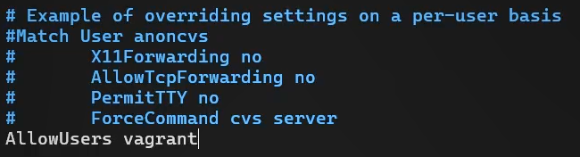
Figure 8: Добавление AllowUsers
vagrant
Ограничение
списка пользователей для удалённого доступа по SSH
Сохраняем изменения в файле конфигурации, перезапускаем sshd.
Повторяем попытку получения доступа с client к серверу посредством
SSH-соединения через пользователя.
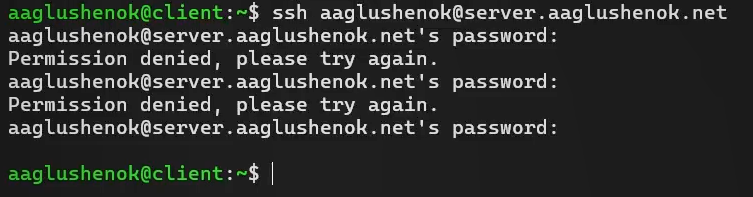
Figure 9: Отказ в доступе для
aaglushenok
Попытка подключения завершилась отказом. Сервер
запросил пароль трижды, после каждого ввода выдавал сообщение Permission
denied, please try again., и разорвал соединение. Прямой удалённый
доступ по SSH для пользователя aaglushenok заблокирован, так как он НЕ
входит в список разрешённых пользователей.
Ограничение
списка пользователей для удалённого доступа по SSH
На server открываем файл /etc/ssh/sshd_config и обновляем список
разрешенных пользователей.
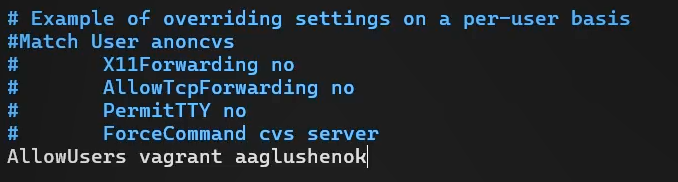
Figure 10: Добавление aaglushenok в
AllowUsers
Ограничение
списка пользователей для удалённого доступа по SSH
Сохраняем изменения в файле конфигурации, перезапускаем sshd. Вновь
пытаемся получить доступ с client к серверу посредством SSH-соединения
через пользователя.
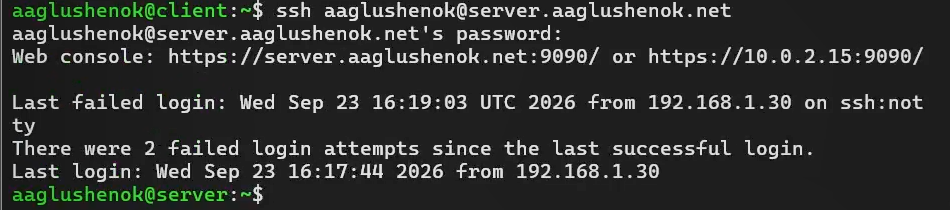
Figure 11: Успешный вход после изменения
AllowUsers
Попытка подключения завершилась успешно. Сервер
запросил пароль, и после его ввода предоставил доступ к командной
оболочке. При входе система вывела сообщение о 2 неудачных попытках
входа (сделанных на предыдущих шагах). Пользователь aaglushenok получил
доступ, так как теперь явно указан в списке разрешённых.
Настройка дополнительных портов для удалённого доступа по SSH
Настройка
дополнительных портов для удалённого доступа по SSH
На server в файле /etc/ssh/sshd_config добавляем порты 22 и
2022.
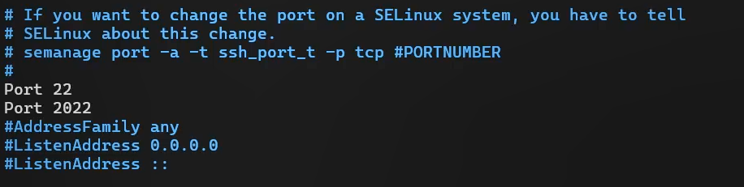
Figure 12: Добавление портов 22 и 2022 в
конфигурацию
Настройка
дополнительных портов для удалённого доступа по SSH
Сохраняем изменения в файле конфигурации, перезапускаем sshd.
Смотрим расширенный статус работы sshd (служба запустилась, но видим
отказ в работе через порт 2022, вызванный ограничениями безопасности
SELinux, поэтому прослушивается только стандартный порт - 22)
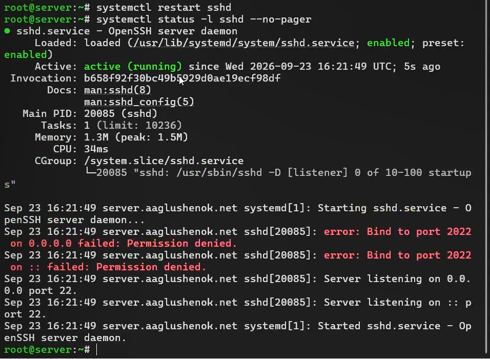
Figure 13: Ошибка привязки к порту 2022
(SELinux)
Настройка
дополнительных портов для удалённого доступа по SSH
Исправляем на server метки SELinux к порту 2022.
В настройках межсетевого экрана открываем порт 2022 протокола
TCP.
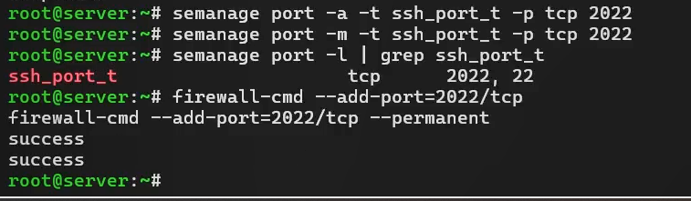
Figure 14: Настройка SELinux и
межсетевого экрана
Настройка
дополнительных портов для удалённого доступа по SSH
Вновь перезапускаем sshd и смотрим расширенный статус его работы
(видим, что теперь прослушиваются оба порта).
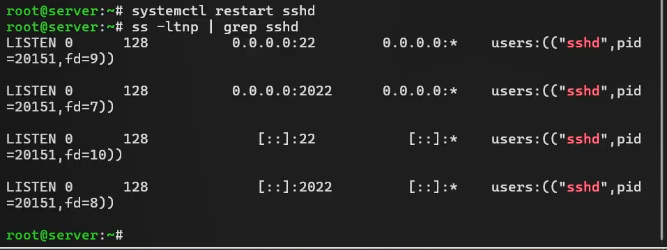
Figure 15: Успешное прослушивание портов
22 и 2022
Настройка
дополнительных портов для удалённого доступа по SSH
С client пытаемся получить доступ к серверу посредством
SSH-соединения через пользователя, после открытия оболочки пользователя
получаем доступ root.
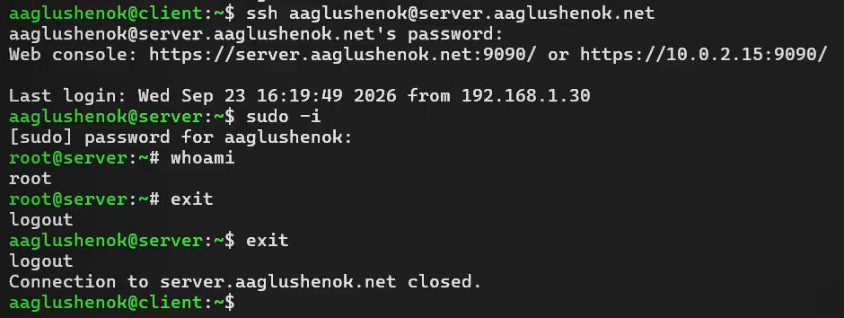
Figure 16: Вход по стандартному порту и
получение прав root
Настройка
дополнительных портов для удалённого доступа по SSH
Повторяем попытку получения доступа с client к серверу посредством
SSH-соединения через пользователя, указав порт 2022, после открытия
оболочки пользователя получаем доступ root.
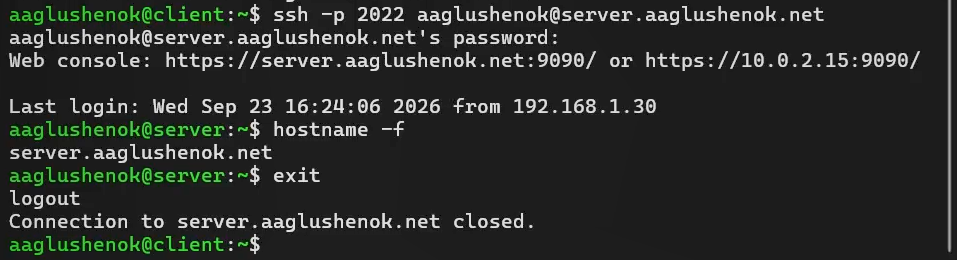
Figure 17: Подключение через порт
2022
Настройка удалённого доступа по SSH по ключу
Настройка
удалённого доступа по SSH по ключу
На server в файле /etc/ssh/sshd_config задаем параметр, разрешающий
аутентификацию по ключу.
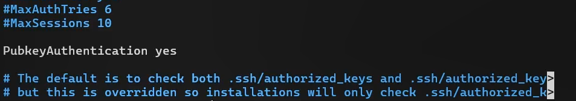
Figure 18: Включение аутентификации по
ключу
Настройка
удалённого доступа по SSH по ключу
Сохраняем изменения в файле конфигурации, перезапускаем sshd.
На client формируем SSH-ключ.
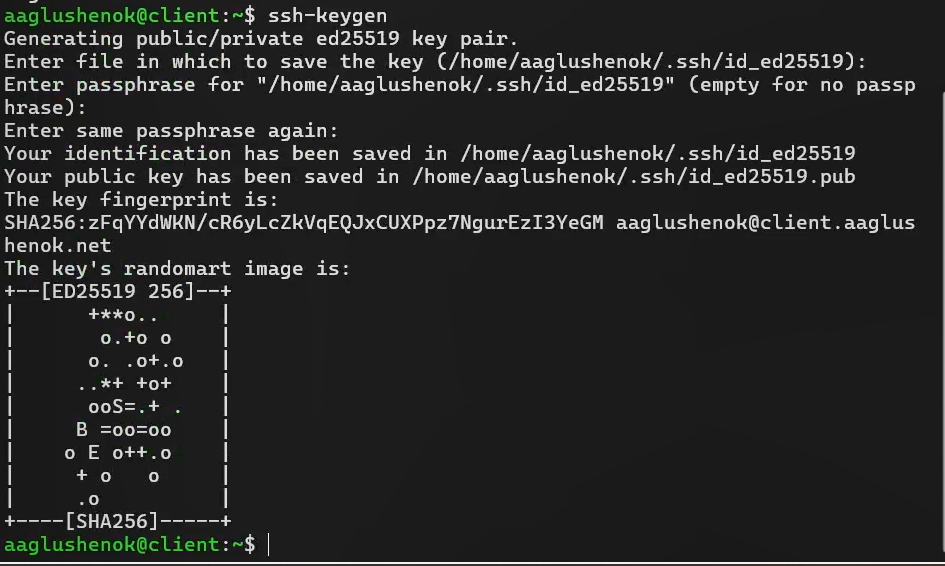
Figure 19: Генерация
SSH-ключа
Настройка
удалённого доступа по SSH по ключу
Закрытый ключ записан в файл ~/.ssh/id_rsa, открытый ключ - в файл
~/.ssh/id_rsa.pub.
Копируем открытый ключ на сервер.
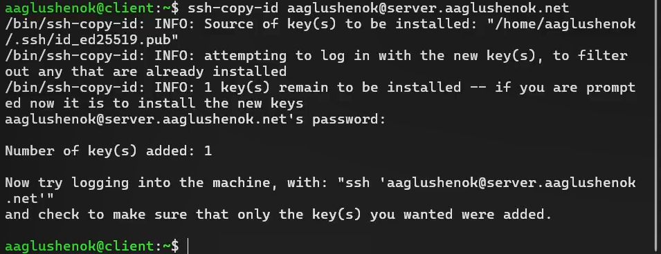
Figure 20: Копирование открытого ключа на
сервер
Настройка
удалённого доступа по SSH по ключу
Пробуем получить доступ с client к серверу посредством
SSH-соединения (видим, что аутентификацию теперь проходит без ввода
пароля).
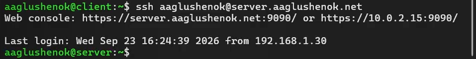
Figure 21: Вход на сервер без
пароля
Организация туннелей SSH, перенаправление TCP-портов
Организация
туннелей SSH, перенаправление TCP-портов
На client смотрим, запущены ли какие-то службы с протоколом TCP
(видим, что локальный порт 8080 свободен).
Перенаправляем порт 80 на server.user.net на порт 8080 на локальной
машине.
Вновь на client смотрим, запущены ли какие-то службы с протоколом
TCP (видим, что туннель создался успешно: в системе появился процесс
ssh, который прослушивает локальный порт 8080).
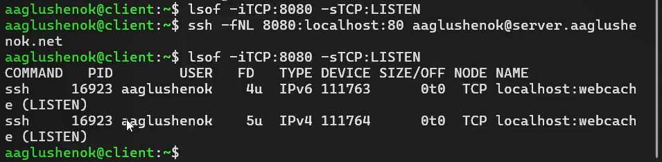
Figure 22: Создание и проверка
SSH-туннеля
Организация
туннелей SSH, перенаправление TCP-портов
На client запускаем браузер, и в адресной строке вводим
localhost:8080. Видим страницу с приветствием.
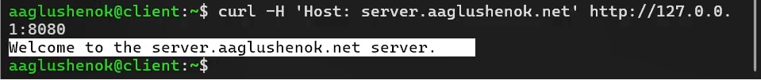
Figure 23: Проверка работы туннеля через
curl
Запуск консольных приложений через SSH
Запуск консольных
приложений через SSH
На client открываем терминал под пользователем.
Смотрим с client имя узла сервера.
Смотрим с client список файлов на сервере.
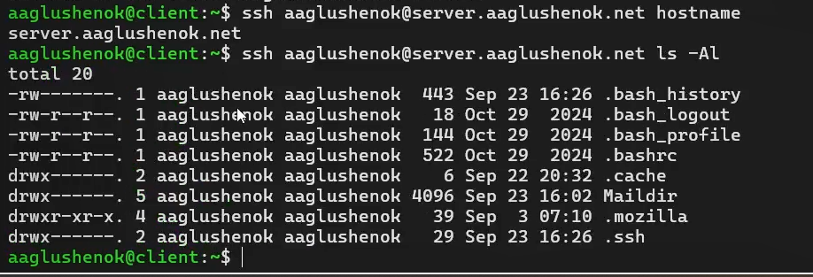
Figure 24: Выполнение команд hostname и
ls по SSH
Запуск консольных
приложений через SSH
Смотрим с client почту на сервере.
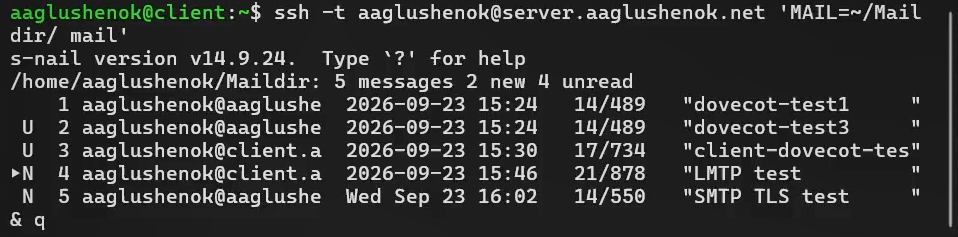
Figure 25: Просмотр почты на сервере
через SSH
Запуск графических приложений через SSH (X11Forwarding)
Запуск
графических приложений через SSH (X11Forwarding)
На server в файле /etc/ssh/sshd_config разрешаем отображать на
локальном клиентском компьютере графические интерфейсы X11.
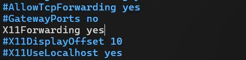
Figure 26: Включение
X11Forwarding
Запуск
графических приложений через SSH (X11Forwarding)
Сохраняем изменения в файле конфигурации, перезапускаем sshd.
Пробуем с client удалённо подключиться к серверу и запустить
графическое приложение, например, firefox. Видим, что после ввода пароля
поверх терминла открывается окно браузера Firefox.
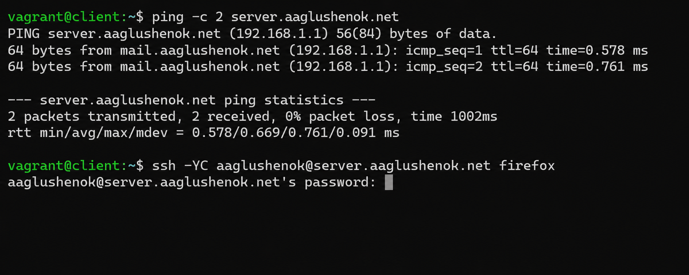
Figure 27: Запуск firefox через
SSH
Внесение изменений в настройки внутреннего окружения виртуальной
машины
Внесение
изменений в настройки внутреннего окружения виртуальной машины
На ВМ server переходим в каталог /vagrant/provision/server/ для
внесения изменений в настройки внутреннего окружения.
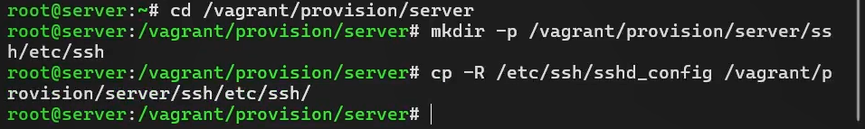
Figure 28: Создание каталогов и
копирование sshd_config
Внесение
изменений в настройки внутреннего окружения виртуальной машины
В каталоге /vagrant/provision/server создаем исполняемый файл
ssh.sh, прописываем в нем скрипт из материалов.
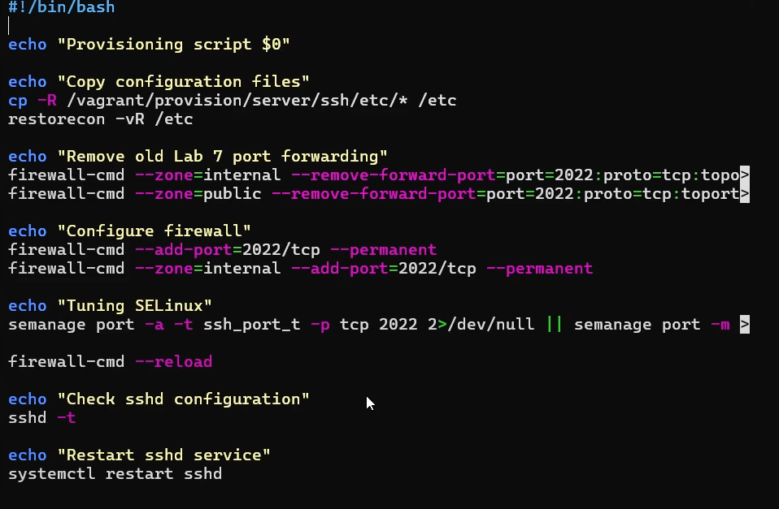
Figure 29: Создание скрипта
ssh.sh
Внесение
изменений в настройки внутреннего окружения виртуальной машины
Настраиваем права доступа к файлу.
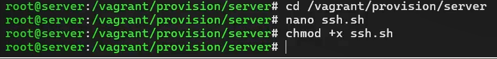
Figure 30: Настройка прав доступа к
файлу
Внесение
изменений в настройки внутреннего окружения виртуальной машины
Для отработки созданного скрипта во время загрузки ВМ server в
конфигурационном файле Vagrantfile обновляем конфигурации для
сервера.
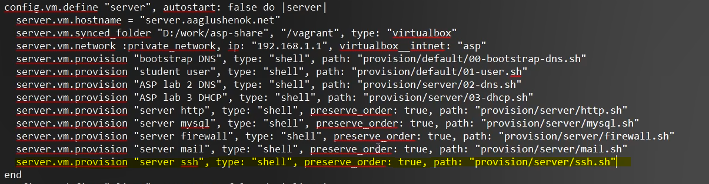
Figure 31: Обновление конфигураций
Vagrantfile
Выводы
Выводы
В ходе выполнения лабораторной работы № 11 мне удалось приобрести
практические навыки по настройке удалённого доступа к серверу с помощью
SSH.